2019년 9월 2일
최근 나는 산업화 이전 문명의 성장과 쇠퇴에 관한 인구-구조적 이론을 제시하는 세큘러 사이클(Secular Cycles)을 리뷰했다. 토지가 풍부할 때 인구는 증가하고 경제는 번영한다. 그러다 토지가 수용 한계에 도달하고 소득이 생존 수준으로 떨어지면, 해당 지역은 기근과 질병, 전쟁의 위험에 처하게 된다. 그리고 이러한 재앙들은 토지가 다시 풍부해질 만큼 충분한 사람들을 죽인다. 호황기에는 엘리트들이 번영하며 단결하지만, 불황기에는 배신과 내분이 판치는 시대 속에서 엘리트들은 서로를 공격한다. 꽤 합리적으로 보였고, 저자인 피터 터친(Peter Turchin)과 세르게이 네페도프(Sergey Nefedov)는 이를 뒷받침할 방대한 데이터를 가지고 있었다. 에이지스 오브 디스코드(Ages of Discord)는 터친이 동일한 이론을 현대 미국에 적용하려는 시도다. 이 방식이 통하지 않을 것이라고 생각할 이유는 많으며, 책은 그 지점들을 제대로 다루지 못하고 있다. 따라서 우선 터친이 제시한, 이러한 사이클이 존재한다는 데이터를 먼저 살펴봄으로써 이 가설이 왜 매력적으로 느껴질 수 있는지 확인해보고자 한다. 데이터를 확인하고 나면, 이론적인 문제점들에 대해 우리가 어느 정도까지 거부감을 느껴야 할지 결정할 수 있을 것이다.
터친(Turchin)이 제시한 두 가지 주기적 패턴 중 첫 번째는 국가의 성장과 쇠퇴가 반복되는 장기 주기다. 그의 저서 『세속적 주기(Secular Cycles)』에 등장하는 산업화 이전 사회에서 이 패턴은 약 300년 동안 지속되었으나, 『불화의 시대(Ages of Discord)』가 묘사하는 현대 미국에서는 그 기간이 약 150년으로 단축된다.
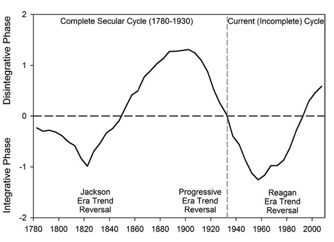
이 요약 도표는 훨씬 더 구체적인 여러 데이터 세트를 결합한 것이다. 예를 들어, 고고학자들은 흔히 유골의 키를 통해 특정 시기의 번영 정도를 평가한다. 영양 상태가 좋고 행복한 아이들은 더 크게 자라는 경향이 있다. 따라서 키가 큰 유골들이 발견되는 층은 해당 고고학적 시기에 풍요로운 시절이 있었음을 의미할 가능성이 높고, 성장이 저해된 유골들이 발견되는 층은 기근과 스트레스가 있었음을 의미할 가능성이 높다. 만약 이 방식을 현대 미국에 적용한다면 어떻게 될까?
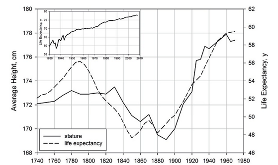
내가 파악한 바로는, 신장 그래프는 가공되지 않은 원시 데이터다. 기대 수명 그래프는 원시 데이터에서 일정하게 상승한다고 가정한 추세를 뺀 값이다. 즉, 기술 발전이 기대 수명을 선형적으로 증가시키고 있다고 전제할 때, 그 요인을 제외하고 나면 어떤 다른 요인들이 보이는가 하는 것이다. 정확한 통계적 논리는 터친(Turchin)의 출처인 미국 역사 통계(Historical Statistics of the United States)(Carter et al 2004)에 담겨 있겠지만, 나는 해당 자료를 가지고 있지 않으므로 판단할 수 없다.
다음 그래프는 1인당 GDP로 나눈 중위 임금으로, 소득 평등도를 나타내는 투박한 척도이다.
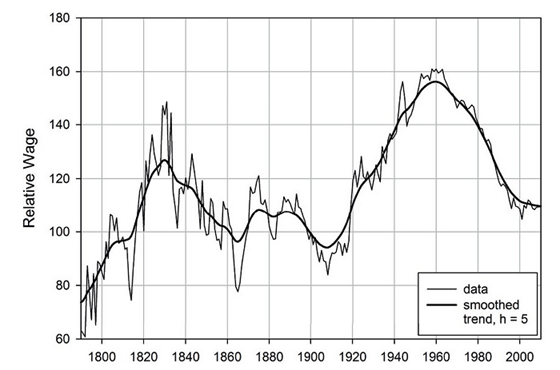
다음 그래프는 여성의 초혼 연령 중앙값이다. 터친(Turchin)은 이것이 사회적 낙관주의의 궤적을 따른다는 연구 결과를 인용한다. 호황기에는 젊은이들이 쉽게 독립하여 가정을 부양할 수 있지만, 불황기에는 정착하기 전 삶의 안정을 확인하기 위해 기다리려 하기 때문이다.
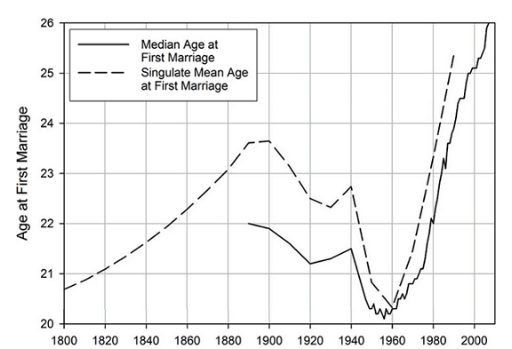
다음 그래프는 제조업 노동자의 평균 소득 대비 예일(Yale) 대학교 등록금의 배수를 나타낸 것이다. 어느 정도는 전반적인 불평등 지표를 따라가겠지만, 터친(Turchin)은 이것이 '계층 상승의 난이도'와 같은 무언가를 측정한다고 생각한다.
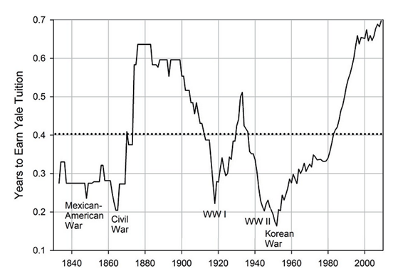
다음 그래프는 정치학자들이 가끔 사용하는 복잡한 지표인 DW-NOMINATE의 ‘정치적 양극화 지수(Political Polarization Index)’를 보여준다. 이 지수는 의회 내 평균적인 민주당원과 평균적인 공화당원(혹은 민주당과 공화당이 존재하기 이전 시기라면 당시의 두 주요 정당) 사이의 투표 패턴 차이를 측정한다. 당파성이 낮은 시기에는 의회 투표가 지역적 요인이나 개인적 요인에 의해 좌우되지만, 당파성이 높은 시기에는 정당 정체성이 지배적인 영향을 미치게 된다.
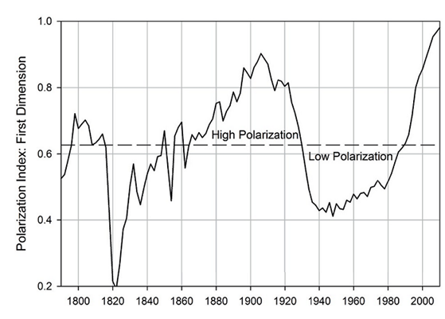
나는 1780년부터 현재까지의 전 기간을 다루는 그래프들만 포함했다. 책에는 더 짧은 구간(주로 데이터가 더 정밀한 최근 시기)만을 다루는 다른 그래프들이 많이 실려 있다. 여기에 포함되지 않은 짧은 구간의 그래프들을 포함해, 그 모든 그래프는 동일한 일반적 패턴을 보여준다. 모든 지표를 동일한 척도로 표준화하고, 위쪽은 항상 '좋음', 아래쪽은 항상 '나쁨'을 의미하도록 부호를 맞춘 뒤 한데 모아보면 이 패턴을 가장 쉽게 확인할 수 있다.
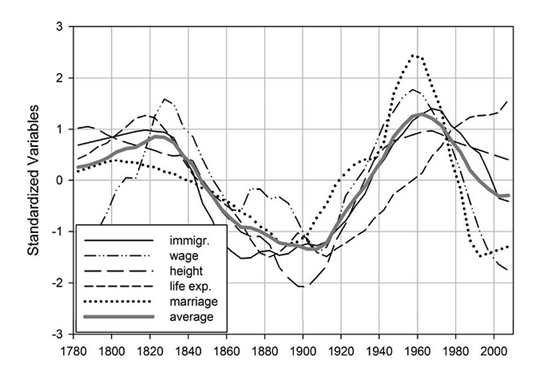
이 그래프의 '평균' 선은 위의 요약 그래픽을 만드는 데 사용된 선이다. 터친(Turchin)은 미국 혁명 이후 수십 년 동안 불안정한 시기(예: 셰이즈의 반란(Shays’ Rebellion), 위스키 반란(Whiskey Rebellion))가 있었으나, 1820년경 미국이 통합, 번영, 평등의 정점에 도달했다고 믿는다. 이후 상황은 점차 악화되어 1900년경 불평등과 비참함, 분열이 최고조에 달했다. 진보 시대(Progressive Era)의 개혁들로 상황이 서서히 개선되었고, 1960년경 다시 한번 통합/번영/평등의 정점을 찍었다. 그 이후로는 여러 부정적인 요인들이 점점 더 맞물리면서(여기서는 레이건 시대의 추세 반전이라고 명명되었으나, 터친 스스로도 레이건 이전부터 시작되었다고 인정한다) 상황이 다시 악화되고 있다.
이 150년 주기의 '거대 주기'와 더불어, 터친(Turchin)은 40~60년 단위의 더 짧은 불안정 주기를 추가한다. 이는 그가 《세속적 주기(Secular Cycles)》에서 '2세대 주기' 혹은 '아버지와 아들의 주기'라고 불렀던 바로 그 40~60년의 불안정 주기와 동일한 것이다.
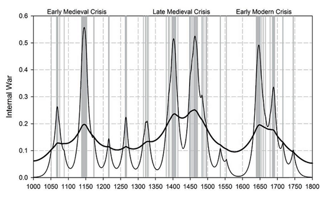
에이지스 오브 디스코드(Ages of Discord)의 45~58페이지에서 설명되는 이 사이클의 도출 과정은 이 책의 백미 중 하나다. 터친(Turchin)은 역학자들이 팬데믹을 추적할 때 사용하는 모델을 활용하여, 폭력을 일종의 감염으로, 급진주의자들을 전염병 매개자로 간주한다. 우선 노출되지 않은 취약 인구 집단에서 시작한다. 어떤 급진주의자, 즉 '환자 제로(patient zero)'가 폭력을 선동하기 시작한다. 그의 생각은 그와 접촉하는 사람들의 일정 비율로 퍼져나가며, 점점 더 많은 사람을 '급진적 아이디어'라는 바이러스로 '감염'시킨다. 하지만 급진화된 상태로 충분한 시간이 흐르면 일부 사람들은 '회복'한다. 이들은 갈등에 지치거나 환멸을 느껴 협력을 지지하는 '능동적 온건파(active moderates)'가 되며, 다시는 감염되지 않는 상태가 된다(역학 모델에서는 이를 '면역이 형성된' 상태라고 하지만, 이들은 역학 모델에는 없는 특성인 주변 사람들의 급진성을 완화하는 능력까지 갖추고 있다). 급진주의자, 능동적 온건파, 그리고 미노출자의 비율이 역동적으로 변함에 따라 주기적인 패턴이 나타난다. 처음에는 모두가 미노출 상태이다. 그러다 급진주의가 서서히 퍼진다. 이후 능동적 온건주의가 점차 확산되어, 마침내 임계점에 도달하면 온건주의가 승리하고 급진주의는 인구 집단 내의 몇몇 고립된 저장소로 억제된다. 그러고 나서 능동적 온건파들이 점차 사망하고 새로운 미노출자들이 태어나면서 사이클이 다시 시작된다. 터친은 이러한 다양한 매개변수들을 조정함으로써, 시스템이 40~60년 주기의 불안정성 파동을 만들어내도록 구현해 냈다.
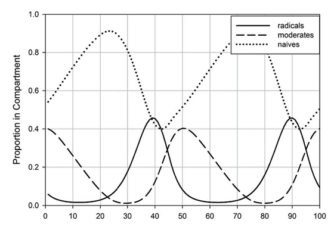
이를 실증적으로 확인하기 위해, 터친(Turchin)은 다양한 시기에 걸쳐 미국에서 발생한 '불안정 사건'의 횟수를 측정하려 시도한다. 그는 타인이 작성한 목록을 사용하려 노력하는데, 이는 매우 옳은 방향이다(타인의 목록이 편향을 심기 더 어렵기 때문이다). 하지만 1780년부터 현재까지의 전 기간에 걸쳐 그가 관심을 두는 정확한 종류의 불안정 사례들이 목록화되어 있지 않을 때면, 그는 때때로 자신의 해석을 덧붙인다. 결국 그는 폭동, 린치, 테러(암살 포함), 그리고 총기 난사 사건들을 합산하게 된다. 각 항목에 대한 그의 정의는 114페이지부터 확인할 수 있는데, 요약하자면 모든 정의가 합리적으로 보이지만 필연적으로 상당한 수준의 자의적 해석 여지(degrees of freedom)를 포함하고 있다는 점이다.
이 모든 것을 종합했을 때, 다음과 같은 결과가 도출된다.
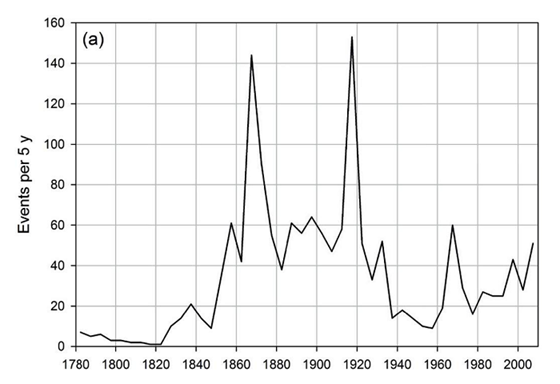
1870년의 정점에는 남북 전쟁(Civil War)과 그와 관련된 여러 폭력 사태(예: 징집 폭동), 그리고 재건 시대(Reconstruction) 전후의 폭력(쿠 클럭스 클랜(Ku Klux Klan)의 부상과 갓 해방된 흑인들을 통제하려 했던 관련 폭력 포함)가 포함되어 있다.
1920년의 정점에는 초기 미국 노동 운동의 전성기가 포함되어 있다. 터친(Turchin)은 1920년부터 1921년까지 애팔래치아(Appalachian) 석탄 지대의 고용주들과 노동자들 사이에 벌어진 '선전포고 없는 전쟁'인 광산 전쟁(Mine War)에 대해 논한다.
비록 시작은 노사 분규였으나, 이는 결국 남북 전쟁을 제외하고 미국 역사상 최대 규모의 무장 봉기로 번졌다. '로건 수호대(Logan Defenders)'라 불리는 소총 무장 광부 1만 명에서 1만 5천 명 사이의 인원이 수천 명의 파업 파괴자 및 보안관 대리인들과 맞서 싸웠다. 이 봉기는 미 육군에 의해 진압되었다. 이러한 폭력적 사건들은 예외적인 경우였으나, 이는 10대 시절의 격동기(violent teens) 이후 더욱 심화되어 온 전반적인 '계급 전쟁'이라는 배경 속에서 발생했다. "1919년, 고용주들이 노동조합을 인정하거나 협상하기를 꺼리자 거의 400만 명의 노동자(전체 노동 인구의 21%)가 파괴적인 행동에 나섰다" (Domhoff and Webber, 2011:74).
노동 폭력과 더불어, 1920년은 인종 폭력 또한 정점에 달했던 시기였다.
인종 갈등으로 인한 폭동 역시 1920년경에 정점에 달했다. 가장 심각했던 두 차례의 발발 사례는 1919년의 '붉은 여름(Red Summer)'(McWhirter 2011)과 털사(Tulsa, 오클라호마주) 인종 폭동이다. 붉은 여름 당시 미국 전역의 20개 이상의 도시에서 폭동이 일어났으며, 약 1,000명의 사망자가 발생했다. 약 300명의 사망자를 낸 1921년의 털사 폭동은 내전의 양상을 띠었는데, 총기로 무장한 수천 명의 백인과 흑인이 거리에서 격돌했으며, 번창했던 흑인 거주지인 그린우드 지구(Greenwood District)의 대부분이 파괴되었다.
그리고 테러리즘이다:
이탈리아 무정부주의자들(“갈레아니스트(Galleanists)”)의 폭탄 테러 캠페인은 1920년 월스트리트(Wall Street)에서 발생한 폭발 사고로 정점에 달했으며, 이 사고로 38명이 사망했다.
노동 불안, 인종 폭력, 테러리즘 같은 동일한 문제들이 1970년대의 급증기에도 반복되었다. 이에 대해 터친(Turchin)의 말을 인용하는 대신, 내게 큰 충격을 주었던 Days of Rage에 대한 Status 451의 리뷰를 인용하고 싶다.
“사람들은 1972년 미국 내에서 1,900건 이상의 국내 폭탄 테러가 있었다는 사실을 완전히 잊어버렸다.” — 맥스 노엘(Max Noel), 전 FBI 요원
최근 나는 어떤 책 한 권에 완전히 매료되었다. 1970년대 지하 조직을 다룬 브라이언 버러(Bryan Burrough)의 『분노의 나날들(Days of Rage)』이다. 지난 1년 동안 읽은 책 중 가장 중요한 책이었다. 그래서 나는 이 책에 대해 일련의 트윗스톰(tweetstorm, 트위터에서 여러 개의 트윗을 이어 쓰는 것)을 올렸고, 클라크(Clark)가 후세를 위해 이를 모아달라고 요청했다. 편집상의 일관성을 위해 내용을 약간 수정했다.
『분노의 나날들』이 중요한 이유는, 이 모든 일들이 잊혔으며 결코 잊혀서는 안 되기 때문이다. 1970년대의 지하 조직은 규모가 작지 않았다. 수백 명의 사람들이 도시 게릴라가 되었다. 펜타곤(Pentagon), 국회의사당, 법원, 식당, 기업 건물들을 폭파했다. 은행을 털고 경찰을 암살했다. 사람들은 정말로 혁명이 임박했다고 믿었으며, 폭력이 그 혁명을 불러올 것이라고 생각했다.
버러가 『분노의 나날들』에서 계속해서, 또 계속해서 강조하는 점은 이 모든 일들이 얼마나 많이 잊혔는가 하는 것이다. 푸에르토리코 분리주의자들은 뉴욕시를 300번 가까이 폭격하고, 사람들을 죽이고, 의회에 총격을 가했으며, 미국 대통령(트루먼)을 암살하려 했다. 하지만 기억하는 사람은 아무도 없다.
이 구절이 내게 와닿는 이유는, 맞다, 아무도 그것을 기억하지 못하기 때문이다. 1920년대의 폭력 사태 급증에 대해서도 나는 비슷하게 느낀다. 털사 인종 학살(Tulsa race riot)에 대해서는 들어본 적이 있었지만, 광산 전쟁(Mine War)이나 월스트리트 폭탄 테러, 그리고 그 외의 사건들은 내게 생소했다. 이것이 중요한 이유는, 이 책을 읽기 전의 내 직관으로는 미국 역사에 50년 간격으로 세 번의 거대한 폭력/불안정성 급증기가 있었다고 생각하지 않았을 것이기 때문이다. 내가 얻은 교훈은 내 직관을 너무 믿지 말고, 터친(Turchin)의 데이터에 조금 더 공감하라는 것이다.
한 가지 더 덧붙이자면, 1770년의 급증은 분명 미국 혁명(American Revolution)과 그에 수반된 온갖 폭동 및 공동체 간 폭력(예: 토리당 지지자들에 대한 공격) 때문이었다. 그렇다면 1820년의 급증은 어디에 있었을까? 터친(Turchin)은 그것이 일어나지 않았음을 인정한다. 그는 1820년이 150년 주기라는 거대 사이클에서 절대적으로 가장 좋았던 시기였기에, 모두가 너무나 행복하고 풍요로우며 애국심에 넘쳤던 나머지 예정되어 있던 불안정성의 정점이 그냥 흐지부지 사라져 버렸다고 말한다. 터친은 언급하지 않았지만, 1870년의 급증이 특히 심했던 이유(그놈의 남북 전쟁 전체를 보라) 역시 거대 사이클의 최악의 지점과 (정확히 일치하지는 않더라도) 매우 근접했기 때문이라는 비슷한 논리를 펼칠 수 있을 것이다. 1920년은 그 중간쯤에, 1970년은 어느 정도 괜찮았던 시기에 맞물렸으므로, 이들은 아무런 문제가 없었던 1820년과 재앙이었던 1870년 사이의 어딘가에 위치하게 된 셈이다.
원래의 질문, 즉 무엇이 이러한 150년 주기의 흥망성쇠를 이끄는가에 대해 잊은 것은 아니지만, 데이터를 조금만 더 살펴보고자 한다. 다시 말하지만, 이 데이터들은 정말 흥미롭다. 이 데이터들의 배후에 정말 흥미로운 이론이 숨어 있거나, 아니면 단순히 주장을 뒷받침하기 위해 짜깁기된 저질 데이터이거나 둘 중 하나일 것이다. 과연 어느 쪽일까? 데이터의 신뢰성을 확인하기 위해 몇 가지 표본 조사(spot-checks)를 해보겠다.
첫 번째 교차 검증: 터친(Turchin)의 데이터를 독립적인 출처를 통해 확인할 수 있는가?
이 정도면 성공적으로 검증된 것으로 간주하겠다. 터친(Turchin)의 데이터는 대체로 정확해 보인다.
두 번째 교차 검증: 터친(Turchin)이 포함하지 않은 다른 지표들도 그가 발견한 패턴을 확인해 주는가, 아니면 그저 자신에게 유리한 데이터 시리즈만 체리피킹(cherry-pick)한 것인가? 스포일러를 하자면, 이 부분은 수행하지 못했다. 일반적인 웰빙을 반영하면서도 200년 이상의 혼입 변수가 없는 데이터를 확보할 수 있는 척도를 생각해 내기가 너무 어려웠기 때문이다. 하지만 내가 시도했다가 실패한 사례들은 다음과 같다.
문제는 이렇다. 사실 나는 이혼율, 살인율, 환율 등이 국가적 번영의 궤적을 따라갈 것이라고 기대할 이유가 전혀 없다. 우선, 그것들이 번영과는 완전히 무관할 수도 있기 때문이다. 설령 희미하게나마 관련이 있다 하더라도, 영향을 미칠 수 있는 온갖 무작위적인 요인들이 산재해 있다. 문제는, 터친(Turchin)이 왜 그렇지 않은지에 대해 그럴듯한 이야기를 들려주기 전까지는, 신장이나 초혼 연령, 소득 불평등에 대해서도 똑같이 말했을 것이라는 점이다. 여기서 얻은 교훈은, 어떤 지표가 세속적-주기적(secular-cyclic) 패턴을 따라야 하고 어떤 것이 그렇지 않은지 나는 전혀 모른다는 것이며, 따라서 내가 희망했던 방식으로는 체리피킹(cherry-picking) 여부를 가려내기 위한 표본 점검을 할 수 없다는 사실이다.
세 번째 점검: 상식이다. 내 눈에 띄었던 몇 가지 사항은 다음과 같다.
아마도 150년 주기와 더 짧은 50년 주기를 결합함으로써 첫 번째와 세 번째 문제를 해결할 수 있을 것이다. 남북 전쟁(Civil War)은 50년 주기의 간헐적인 폭력 분출 시점이 150년 주기의 저점과 맞물리면서 결정되었다. 사람들이 레이건(Reagan)에 대해 좋은 기억을 가지고 있는 이유는 1970년대 폭력 분출의 혼란이 끝났기 때문이다.
두 번째 문제에 대해 터친(Turchin) 역시 인지하고 있다. 그는 다음과 같이 썼다.
경제학자와 여타 사회과학자들 사이에는 1930년대가 미국 정치-경제 체제 발전의 '결정적 순간'이었다는 믿음이 널리 퍼져 있다(Bordo et al 1998). 하지만 주요 구조적-인구학적 변수들을 살펴보면, 1930년대라는 십 년이 전환점이었던 것으로는 보이지 않는다. 진보 시대(Progressive Era) 동안 확립된 구조적-인구학적 추세는 일부 가속화되기는 했으나, 1930년대를 지나서도 계속 이어졌다.
특히 주목할 점은, 모든 복지 변수들이 대공황 이전인 1900년에서 1920년 사이에 이미 추세 반전을 겪었다는 것이다. 대략 1910년부터 1960년까지 이 변수들은 상승 추세 주변에서 한두 번의 사소한 변동만 있었을 뿐, 거의 단조 증가했다. 실질 임금의 역학 또한 1932년 이후 약간의 가속이 있었을 뿐, 1930년대에 어떤 단절점(breaking point)을 보이지 않는다.
그에 비해, 그는 마침 시기적절하게 맞아떨어진(그리고 나는 지금까지 모르고 있었던) 1890년대 중반의 경제 공황을 강조한다. 터친(Turchin)이 맥코믹(McCormick)을 인용한 구절을 다시 인용하자면 다음과 같다.
1893년부터 1897년까지 이어진 불황만큼 깊고 비극적이었던 적은 없었다. 수백만 명이 실업의 고통을 겪었으며, 특히 1893-4년과 1894-5년의 겨울에는 수천 명의 '부랑자(tramps)'들이 먹을 것을 찾아 시골 곳곳을 떠돌았다 […]
대규모 실업으로 인한 실질적인 고통에도 불구하고, 웰빙 지표들은 1930년대 대공황(Great Depression)의 인적 비용이 1890년대 '제1차 대공황'의 수준에는 미치지 못했음을 시사한다(1890년대 불황의 심각성에 관한 일반적인 논의는 Grant 1983:3-11 참조). 더욱이 1930년대가 격렬한 노동 불안의 시기로 기억되지만, 계급 투쟁의 강도는 실제로는 1890년대 불황 당시보다 낮았다. 미국 정치 폭력 데이터베이스(US Political Violence Database, Turchin et al. 2012)에 따르면, 1890년대에는 총 140명의 사망자를 낸 32건의 치명적인 노동 분쟁이 있었던 반면, 1930년대에는 총 55명의 사망자를 낸 20건의 분쟁이 있었다. 게다가 미국 노동 역사상 마지막 치명적 파업은 1937년에 일어났다… 다시 말해, 1930년대는 전반적인 하락 추세 속에서 나타난 미국 내 폭력적 계급 투쟁의 마지막 상승기였을 뿐이다.
1930년대 공황이 미국 역사상 최악의 경제 침체로 기억되는(정확히는 잘못 기억되는) 이유는, 단순히 그것이 남북 전쟁 이후 시대에 닥친 거대 불황들 중 마지막이었기 때문일 것이다.
네 번째 점검: 책을 읽는 동안 무작위로 눈에 띈 치명적인 오류가 있었는가?
70페이지에서 터친(Turchin)은 “미국 인구의 최대 10%를 앗아간 1849년의 대콜레라 유행”에 대해 논한다. 내게 이 수치는 믿기 힘들 정도로 높게 느껴졌다. 그가 인용한 출처인 콜(Kohl)의 『전염병과 역병 백과사전(Encyclopedia Of Plague And Pestilence)』을 확인해 보니 실제로 그 수치가 적혀 있었다. 하지만 내가 확인한 다른 모든 자료는 해당 유행병이 미국 인구의 “겨우” 0.3%에서 1% 사이를 사망시켰다는 점에 동의했다(세인트루이스(St. Louis)처럼 유독 운이 없었던 몇몇 도시에서는 10%에 달했다). 백과사전에 적힌 내용을 정확히 옮겨 적었다는 점에서 터친의 학술적 성실함을 탓할 수는 없겠으나, 내가 무언가 놓치고 있는 게 아니라면 그의 상식에는 의문이 든다.
또한, 234페이지에서 터친(Turchin)은 의대 졸업생 중 레지던트 과정을 밟는 비율을 "의사직의 수요와 공급 사이의 격차"로 해석하며, 이를 엘리트 과잉 생산에 관한 더 넓은 논거와 연결 짓는다. 하지만 내 생각에 이는 의료 시스템이 작동하는 방식에 대한 이해가 부족함을 보여준다. 현재 의사는 심각한 공급 부족 상태다. 내 말이 믿기지 않는다면, 보험 적용이 되는 전문의 진료 예약을 적당한 시간 내에 잡으려고 노력해 보라. 레지던트 정원은 유기적인 수요에 의해 제한되는 것이 아니다. 정부가 너무 많은 제약을 걸어두었기에 정부 지원 없이는 병원이 레지던트를 후원하지 않으며, 정부는 더 많은 지원금을 주기에는 너무 인색하기 때문에 제한되는 것이다. 이 모든 것은 엘리트 과잉 생산과는 아무런 관련이 없다.
이것들은 방대한 분량의 책에서 발견된 아주 사소한 두 가지 오류일 뿐이다. 하지만 이 오류들은 내가 어느 정도 지식이 있는 분야인 의학 분야에서 발생했다. 이 점이 나를 겔만 건망증(Gell-Mann Amnesia)에 빠지게 한다. 내가 잘 아는 분야에서조차 오류를 발견했다면, 내가 미처 잡아내지 못한 다른 분야의 오류는 대체 얼마나 더 많을 것인가?
무작위 표본 조사를 통해 내린 나의 전반적인 결론은, 제시된 데이터 자체는 기본적으로 정확하지만, 그 외의 모든 것은 무엇이 이론에 부합하고 무엇이 그렇지 않은지를 두고 논쟁하는 것에 너무나 의존하고 있어 사실상 포기 상태라는 것이다.
좋다. 우리는 이제 거대 주기(grand cycle)를 뒷받침하는 데이터들을 살펴보았다. 40~60년 주기의 불안정성 사이클에 관한 데이터와 이론도 훑어보았다. 또한 이 데이터를 신뢰해야 할 이유와 신뢰해서는 안 될 이유에 대해서도 검토했다. 이제 우리가 처음 제기했던 질문으로 돌아갈 시간이다. 본래 산업화 이전 사회를 지배했던 맬서스주의(Malthusian) 원칙에서 도출된 거대 주기가, 왜 현대 미국에서도 유효해야 하는가? 이제 식량과 토지는 더 이상 제한적인 자원이 아니며, 기근과 질병, 전쟁이 인구를 실질적으로 감소시키지도 않는다. 원래의 세속적 주기(secular cycle)를 추동하던 거의 모든 요인이 사라졌는데, 왜 이것이 여전히 적용될 가능성을 고려해야 하는가?
이 작업을 계속 미뤄왔다. 왜냐하면 이것이 《에이지스 오브 디스코드(Ages of Discord)》가 첫 페이지부터 직면하게 될 너무나 당연한 질문임에도 불구하고, 명쾌한 답변 하나를 내놓기가 어렵다고 느꼈기 때문이다.
때때로 터친(Turchin)은 노동의 공급과 수요에 대해 이야기한다. 노동 공급이 수요를 앞지르는 시기에는 임금이 하락하고 불평등이 심화되며, 엘리트 계층이 분열되고 국가 상황이 악화된다. 이는 맬서스 주기(Malthusian cycle)의 '토지가 수용 능력에 도달한' 단계와 유사하다. 반대로 노동 수요가 공급을 초과하는 시기에는 임금이 상승하고 불평등이 감소하며, 엘리트들이 단결하고 국가 상황이 개선된다. 정부는 언제나 저임금을 원하는 금권 정치인들에 의해 통제된다. 따라서 그들은 노동 공급을 늘리는 정책, 특히 느슨한 이민법을 시행한다. 하지만 이러한 조치는 불평등을 심화시키고 모두를 비참하게 만든다. 이에 평범한 사람들이 포퓰리즘 운동, 사회주의 간부, 노동조합 같은 저항 조직을 결성한다. 시스템은 폭력과 혁명, 그리고 완전한 붕괴의 벼랑 끝에서 위태롭게 흔들린다. 엘리트들은 이런 파국을 원치 않기에, 한 발 물러나 자신들이 황금알을 낳는 거위의 배를 가르고 있었다는 사실을 깨닫고 민중의 목을 조르던 손길을 늦추기로 결정한다. 정부는 한동안 적당히 친노동적이고 진보적인 성향을 띠며 이민법을 강화한다. 노동 과잉 공급이 줄어들고 임금이 오르며 불평등이 감소하자 모두가 행복해진다. 모두가 한동안 행복하게 지내고 나면, 포퓰리스트와 사회주의자, 노동조합은 영향력을 잃고 흩어진다. 위협을 느껴본 적 없는 새로운 세대의 엘리트들이 권력을 잡고, 그들은 속으로 생각한다. "정부 통제권을 이용해 노동자를 더 쥐어짜면 어떻게 될까?" 그렇게 사이클은 다시 시작된다.
하지만 때때로 터친(Turchin)은 '엘리트 과잉 생산'에 대해 더 많이 이야기한다. 엘리트의 수가 상대적으로 적을 때, 그들은 공동의 이익을 위해 협력할 수 있다. 초당적 협력이 활발해지고, 모두가 현명하고 자애롭다고 인식되는 체제 아래 하나로 뭉치며, 우리는 역사학자들이 좋은 감정의 시대(The Era Of Good Feelings)라고 부르는 1820년대 미국 황금기와 같은 시기를 맞이하게 된다. 그러나 엘리트의 수가 고위직의 수를 넘어서면 경쟁이 치열해진다. 엘리트들은 서로를, 그리고 국가를 배신함으로써 점점 더 가혹해지는 무한 경쟁(rat race)에서 우위를 점할 수 있다는 사실을 깨닫는다. 정부와 문화는 극단적인 당파성이 지배하는 '배신-배신'의 시대로 접어들고, 모두가 앞서 나가기 위해 생산적인 규범과 제도라는 공유지를 불태워 버린다. 결국... 어떤 과정이 이를 되돌리거나 하는 식일까?... 그러고 나면 다시 사이클이 시작된다.
또 다른 때에 터친(Turchin)은 일종의 수학적 형식주의로 후퇴하는 것처럼 보인다. 그는 "일반 시민들의 불만 수준은 도시화율 x 연령 구조 x 엘리트 대비 임금의 역수와 같다고 가정하자"라거나 "재정적 고통 지수를 부채 ÷ GDP x 국가 기관에 대한 불신 수준으로 정의하자" 같은 아이디어에 기반해, 겉보기에 매우 조잡해 보이는 동적 피드백 모델을 구축한다. 그러고는 이 모든 것을 하나로 묶어, 불만 수준이 국가의 재정적 고통 수준 및 수십 가지의 다른 변수들과 어떻게 상호작용하는지를 계산하는 모델을 만든다. 한편으로 이는 정말 멋진 일이며, 이것이 실제로 작동하는 것을 지켜보고 있으면 셀던(Seldon)이 심리역사학(psychohistory)을 창시했을 때 느꼈을 법한 기분이 든다. 하지만 다른 한편으로는, 이것이 정말로 지어낸 이야기처럼 보인다. 터친 스스로도 동적 피드백 시스템은 현실과 아주 조금만 어긋나도 완전히 엉망이 되기로 악명 높다는 점을 인정하지만, 자신이 이 분야의 최첨단을 이해하고 있으며 시스템이 그렇게 작동하지 않도록 만드는 법을 알고 있다고 우리를 안심시킨다. 그가 맞는지 틀린지 판단할 만큼 내가 아는 바는 없으나, 나의 사전 확률(priors)은 "극도로, 거의 가늠할 수 없을 정도로 틀렸을 것" 쪽에 걸려 있다. 그럼에도 그는 때때로 동적 피드백 시스템의 변화는 오직 시스템 전체의 관점에서만 설명될 수 있으며, 특정 변화에 관여한 구체적인 요인들을 지목하거나 그에 관한 이야기를 만들려는 시도는 기껏해야 근사치에 불과하다는 점을 상기시킨다.
이 세 가지 이야기는 모두 거의 즉각적으로 문제에 봉착한다.
첫째, 노동 공급 이야기는 이민 문제에 상당히 집중한다. 터친(Turchin)은 이민이 세속적 주기(secular cycle) 패턴을 따른다는 점을 보여주기 위해 많은 공을 들였다. 즉, 이민은 주기의 최악의 시기에 가장 많았고, 최선의 시기에 가장 적었다는 것이다.
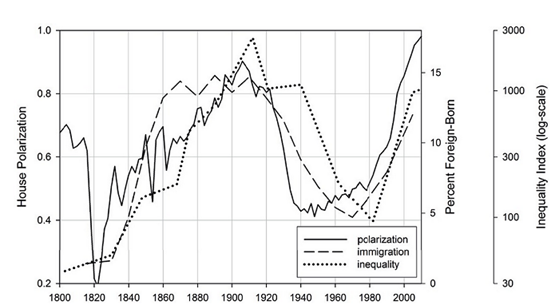
이 모델에서 이민은 금권 정치층(plutocracy)의 도구다. (수요 대비) 노동 공급이 많아지면 임금은 하락하고, 불평등은 심화되며, 노동자의 협상력은 낮아진다. 만약 노동 공급원이 조직력이 부족하고, '노조'라는 개념을 이해하지 못하는 곳에서 왔으며, 자신의 권리를 알지 못하는 데다, 인종적·언어적 장벽 때문에 나머지 노동자 계급과 협력하는 것이 불가능한 상태라면, 금권 정치층 입장에서는 그야말로 금상첨화다. 따라서 금권 정치층이 노동자 계급을 성공적으로 쥐어짜는 시기에는 이민자가 급증한다. 반대로 금권 정치층이 노동자 계급을 두려워하여 그들에게 친절하게 굴 수밖에 없다고 느끼는 시기에는 이민자가 감소한다.
이러한 입장은 어느 정도 일리가 있으며, 앞서 살펴본 장기 데이터에 의해서도 느슨하게나마 뒷받침된다. 하지만 이것은 경제학 역사상 가장 많이 연구된 주제 중 하나가 아니었나? 이민자들이 미국 노동자의 일자리를 뺏지 않는다는 점, 그리고 이민자들 스스로도 제품을 소비함으로써(결과적으로 노동 수요를 증가시켜) 임금을 결정하는 공급-수요 균형에 영향을 주지 않는다는 점은 거의 의심의 여지 없이 증명되지 않았는가?
이 주제에 관해서라면 내가 완전히 잘못 판단하고 있었을지도 모르겠다. IGM 경제 전문가 패널(IGM Economic Experts Panel)을 확인해 보았다. 설문에 참여한 대부분의 전문 경제학자들은 이민이 미국에 전반적으로 이득이 된다고 믿었지만, "타인으로부터 보상을 받지 않는 한, 매년 더 많은 저숙련 외국인 노동자의 합법적 입국이 허용된다면 많은 저숙련 미국인 노동자들의 처지가 실질적으로 악화될 것"이라는 점에는 (동의 50%, 반대 9%) 동의했다. 경제학자들이 매우 확신하는 이 진술과, 모두가 거짓이라고 확신하는 "이민자가 당신의 일자리를 뺏는 것을 걱정해야 한다"라는 말 사이의 차이점을 나는 도저히 모르겠다. 아마도 이런 식일까. 이민이 일반적으로 "경제 전체를 더 좋게" 만들기는 하지만, 그 이득이 균등하게 분배된다는 보장은 없으며, 따라서 특히 저숙련 노동자들에게는 해로울 수 있다는 것? 모르겠다. 이것만으로도 내 생각에는 꽤 큰 업데이트(update, 새로운 정보에 따른 신념 수정)가 되겠지만, 모든 일류 경제학자들이 한쪽 방향으로 생각한다고 들었는데 이제 그 모든 일류 경제학자들이 반대 방향으로 말하는 설문 조사를 보게 되었으니, 큰 업데이트는 불가피한 것 같다. 이 분야에 대해 더 잘 아는 분의 의견을 듣고 싶다.
이민이 저숙련 노동자들에게 피해를 줄 수 있다는 말이 사실일지라도, 이민 증가가 1973년 이후의 임금 정체와 최근의 불평등 심화 추세에 매우 큰 영향을 미쳤다는 터친(Turchin)의 주장은 현재의 정치적 감수성으로는 충격적으로 들릴 것이다. 하지만 터친이 말해야 할 것은 오직 이것뿐이다.
1978년 이후 실질 임금을 하락시킨 주된 요인 중 하나가 노동 공급과 수요 사이의 불균형이었다는 점은 분명하다. 하버드 대학교의 경제학자 조지 J. 보르하스(George J. Borjas)가 최근 썼듯이, “미국 노동 시장에서 실제로 어떤 일이 일어났는지 조사하려는 최선의 실증 연구들은 경제 이론과 잘 일치한다. 즉, 노동자 수의 증가는 임금 하락으로 이어진다.”
내가 받은 인상은 보르하스(Borjas)가 점점 더 고립되어 가는 반대론자의 목소리라는 것이었다. 그래서 이번에도 역시, 여기서 내가 어떻게 해야 할지 도무지 모르겠다.
둘째, 금권 정치적 억압 시나리오는 불평등 자체가 독특한 악이라는 생각에 상당히 크게 의존한다. 이는 시대정신(zeitgeist)과는 꽤 잘 맞아떨어지지만, 조금 혼란스러운 지점이 있다. 평민들이 절대적인 임금이 아니라, 엘리트 대비 상대적인 임금에 왜 신경을 써야 하는가? 지난 수십 년간 GDP 대비 중위 임금은 하락했지만, 절대적인 중위 임금은 상승했다. 비록 아주 조금씩, 문제라고 여겨질 만큼 느리게 상승했을 뿐이지만 어쨌든 올랐다. 현대의 임금이 1950년대보다 훨씬 높다면, 현대인들이 1950년대 사람들보다 경제적으로 더 열악하다고 느끼는 이유는 대체 무엇인가? 이는 터친(Turchin)의 이론에 국한된 문제라기보다 일반적인 의문이지만, 내가 매우 중요하게 생각하는 의문이다. 한 가지 답은 비용 질병(cost disease)이 1인당 소득에 연동된 바우몰 효과(Baumol effect)에 의해 가속화된다는 것이며(3부 여기 참조), 이것이 바로 엘리트의 부 증가가 하층민을 상대적이 아니라 절대적으로 빈곤하게 만들 수 있는 경로이다.
마찬가지로, 국가 간의 불평등이 사회적 악재들과 특별한 상관관계가 없음을 보여주는 스피릿 레벨의 망상(The Spirit Level Delusion)이나 다른 자료들은 어떻게 해석해야 하는가? 이는 불평등 수준이 높아짐에 따라 모든 것이 악화된다는 터친(Turchin)의 미국 중심적 발견에 의문을 제기하는 것일까?
셋째, 금권 정치적 억압 이야기는 엘리트 과잉 생산(elite overproduction) 이야기와 잘 맞물리지 않는다. 엘리트 과잉 생산 이론에서 엘리트들의 단결은 앞으로 좋은 시절이 올 것이라는 신호이며, 엘리트들의 분열은 정부의 기능 부전과 잠재적 폭력을 의미한다. 하지만 슈도에라스무스(Pseudoerasmus)가 지적했듯, 단결한 엘리트들은 흔히 평민들에 대항하여 단결하는 경우가 많다. 따라서 우리는 엘리트들이 더 큰 파이의 몫을 차지하기 위해 서로 협력할 수 있을 때 불평등이 가장 심화될 것이라고 예상해야 한다. 하지만 이는 엘리트들이 오직 양보를 하기 위해서만 단결하며, 엘리트의 단결이 곧 민중의 번영과 같다는 터친(Turchin)의 이야기와는 정반대라고 생각한다.
넷째, 엘리트 과잉 생산(elite overproduction) 이야기의 모든 점이 나를 혼란스럽게 한다. 대체 "엘리트"란 누구인가? 이 범주는 작위가 있는 귀족 계급이 뚜렷했던 농경 사회를 다룬 『세속적 주기(Secular Cycles)』에서는 말이 되었다. 하지만 터친(Turchin)은 미국 엘리트를 연속적인 분포를 따르는 부의 관점에서 정의하려 한다. 만약 부로 엘리트를 정의한다면, "모든 엘리트를 수용할 만큼 고위 지위가 충분하지 않다"라고 말하는 것은 앞뒤가 맞지 않는다. (막대한 부 덕분에) 당신이 엘리트라면, 정의상 당신은 이미 엘리트 지위를 유지하는 데 필요한 것을 갖추고 있기 때문이다. 터친도 이 문제를 인지하고 있는 듯하며, 때로는 부유해지기를 기대하지만 그 열망이 실현될 수도 있고 아닐 수도 있는 어떤 상류층을 지칭하는 "엘리트 지망생(elite aspirants)"이라는 표현을 쓴다. 그렇다면 엘리트 과잉 생산을 이해하는 핵심은, 부유하지 않은 어떤 사람은 왜 '평민'이 되고, 또 다른 부유하지 않은 사람은 왜 '엘리트 지망생'이 되는가에 달려 있다. 하지만 책에서 이에 대해 명확하게 논의한 기억이 없다.
다섯째, 엘리트 과잉 생산을 추동하는 것은 무엇인가? 왜 어떤 시기에는 엘리트(인구 대비 비율)가 증가하고, 다른 시기에는 감소하는가? 왜 이것이 무작위 행보(random walk)가 아니라 하나의 주기(cycle)여야 하는가?
내 추측으로는 에이지스 오브 디스코드(Ages of Discord)에 이러한 질문들에 대한 답이 들어있는데 내가 그냥 놓친 것일 수도 있다. 하지만 답을 찾기 위해 책을 꽤 면밀히 읽었음에도 찾지 못했고, 세큘러 사이클스(Secular Cycles)에서는 이와 비슷한 공백이 느껴지지 않았다. 결과적으로, 이 책에는 매혹적인 데이터들이 일부 포함되어 있었음에도 불구하고, 정확히 어떤 일이 벌어지고 있는지에 대한 명확하고 명료한 논지가 부족하다는 인상을 받았다.
데이터가 기본적으로 옳다고 받아들인다면, 우리는 이 이론에서 어떻게든 어떤 의미를 짜내어 찾아내야만 하는 것일까?
데이터는 한 주기와 그 절반 정도의 기간을 다룬다. 즉, 주기가 "반복"되는 모습을 겨우 엿보는 수준이라는 뜻이다. 이것이 서로 단절된 추세가 아니라 하나의 주기라는 결론은, 첫 번째 전환점(1820년)에서 두 번째(1890년)까지 약 70년이 걸렸고, 두 번째에서 세 번째(1960년)까지 역시 약 70년이 걸렸다는 단 한 번의 우연한 일치에만 기반하고 있다.
가장 단순한 설명은 "어떤 이유에서인지 1820년경에는 상황이 유난히 좋았고, 1890년경에는 유난히 나빴으며, 1960년경에는 다시 유난히 좋았다"는 식일 것이다. 사실 이것만으로도 충분히 흥미롭다. 이 책을 읽기 전까지는 몰랐던 사실이며, 미국 역사에 대한 나의 관념을 크게 바꾸어 놓기 때문이다. 하지만 이는 세속적 주기(secular cycle)의 발견보다는 훨씬 덜 흥미로운 일이다.
가장 간결한 설명은 토마 피케티(Thomas Piketty)가 그의 저서 21세기 자본(Capital In The Twenty-First Century)에서 주장한 내용과 비슷하다고 생각한다. 세계 대전 전까지 불평등이 심화되었던 이유는, 성장률에 대한 합리적인 가정을 전제했을 때 불평등이란 원래 자연스럽게 그렇게 움직이는 것이기 때문이다. 그러다 대공황과 세계 대전이 기존의 많은 자금과 권력 구조를 쓸어버렸고, 덕분에 잠시 동안 다시 평등한 상태가 되었다. 그 후 불평등은 다시 상승하기 시작했다. 앞서 말했듯, 성장률에 대한 합리적인 가정을 전제하면 불평등이란 원래 자연스럽게 그렇게 움직이는 것이니까. 여기에 스피릿 레벨(The Spirit Level)(불평등이 다른 모든 것을 악화시키는 신비로운 마법의 독약이라는 주장)의 관점을 한 꼬집 곁들이면, 더 이상 설명할 것이 거의 남지 않는다.
(몇 가지 예외가 있다. 왜 1820년까지는 불평등이 감소했는가? 불평등이 정말로 정치적 양극화를 부추기는가? 이민이 불평등이 심화된 시기와 일치한다면, 그 이민이 불평등의 원인이 된 것인가? 그리고 50년 주기의 폭력 사태는 또 어떤가? 그것 역시 우리가 우연의 일치 목록에 넣지 않은 또 다른 우연일 뿐이다!)
그렇다면 피케티(Piketty)에게서는 얻을 수 없지만, 에이지스 오브 디스코드(Ages of Discord)를 통해서는 얻을 수 있는 것이 무엇일까?
우선, '엘리트 과잉 생산(elite overproduction)'이라는 개념은 한 번 접하면 머릿속을 계속 맴도는 구석이 있다. 이는 점점 더 치열해지는 대학 입시: 당신이 알고 싶어 하는 것 그 이상의 정보라는 글의 배경에 끊임없이 깔려 있던 종류의 이야기다. 수백만 명의 풋풋한 대학 졸업생들이 저널리스트가 되어 담론을 형성하고 정의를 위해 싸우길 원하지만, 현실적으로는 그저 클릭베이트(clickbait) 사이트들에 갈려 나가 뱉어지는 상황을 볼 때 떠오르는 그런 생각 말이다. 에이지스 오브 디스코드(Ages of Discord)가 그 정확한 역학 관계를 세밀하게 분석해내지는 못했지만, 일종의 공유된 무의식적 가정 속에 머물던 이 개념을 우리가 논의할 수 있는 광장으로 끌어올려 준 점에 대해서는 감사하게 생각한다.
둘째로, 임금이나 정당 간 양극화와 같이 선함과 악함을 나타내는 다양한 지표들 사이에 깊은 연관성이 있다는 생각은 매우 중요하다. 이는 이민이 불평등을 악화시키지 않는다거나, 불평등이 모든 것을 오염시키는 마법 같은 저주가 아니라는 식의, 내가 이미 결론 내렸다고 생각했던 문제들을 재평가하게 만든다.
셋째, 역사가는 어떤 사건에 집중할지 선택해야 한다. 보통의 역사가들은 대개 똑같이 평범한 사건들에 집중한다. 반면 독특한 역사가들은 때때로 자신의 특이한 논지를 뒷받침하는, 그동안 소외되었던 사건들에 주목하곤 한다. 따라서 터친(Turchin) 같은 이의 글을 읽는 것은 평소라면 절대 접하지 못했을 역사의 단면들을 배울 수 있는 좋은 방법이다. 1920년의 광산 전쟁(Mine War)이나 1849년의 콜레라 유행처럼 앞서 언급한 사례들도 그중 일부이며, 나머지 사건들에 대해서는 나중에 별도의 포스트를 작성할지도 모르겠다.
넷째, 이 책은 대부분의 사람들이 별개라고 생각할 사건들—1973년 이후의 임금 정체, 기술의 대정체(Great Stagnation), 피터 틸(Peter Thiel)의 “확정적 낙관주의(definite optimism)”의 쇠퇴, 그리고 당파적 양극화의 심화—를 서로 연결하려 시도한다. 정확히 어떻게 이들을 연결하는지, 혹은 그 연결 고리에 대해 무엇을 말하려는 것인지는 확실치 않으나, 어쨌든 연결은 한다.
하지만 이 책에서 가장 중요한 점은 터친(Turchin)이 미래를 예측할 수 있다고 주장한다는 것이다. (2016년 트럼프가 당선되기 직전에 쓰인) 이 책은 “우리는 불안정성을 초래하는 구조적-인구학적 압력이 심화되는 시대에 살고 있다”는 말로 끝을 맺는다. 다음 세대 간 폭력의 분출은 2020년경(현실적으로는 앞뒤로 몇 년의 오차가 있을 수 있다)으로 예정되어 있다. 거대 주기(grand cycle)의 저점에 해당하므로, 아주 제대로 된 한 방이 터질 것이다.
그 너머는 어떠한가? 그가 생각하기에 우리가 이 거대한 주기 속에서 정확히 어디쯤 와 있는지는 불분명하다. 만약 이번 주기가 지난 주기와 정확히 같은 길이로 지속된다면 2030년에 바닥을 칠 것으로 예상하겠지만, 터친(Turchin)이 모든 주기의 길이가 정확히 일치한다고 주장한 적은 없다. 그의 그래프 몇몇은 곡률의 징후를 보이며, 우리가 현재 최악의 상황에 처해 있을 가능성을 시사한다. 사회주의자들은 전열을 가다듬어 중요한 정치 세력이 된 것으로 보이는데, 이는 이론상 변화를 위한 필수적인 전제 조건이다.
가까운 미래에 폭력이 급증한다면(현재 발생하는 총기 난사 사건의 횟수만으로 이 조건이 충족될까? 과거의 급증 사례들과 동일한 척도로 그래프화한 결과를 확인해 봐야 할 것이다), 그리고 향후 10년쯤 지나 터널 끝에 한 줄기 빛이 보이는 듯한 상황이 전개된다면, 이 책이 정확한 예측을 내놓았다고 평가할 수 있을 것이다.
터친(Turchin)의 이론을 검증할 다른 방법들을 찾는 데 꽤 관심이 많다. 내 주변의 수학 천재 친구들에게 역동적 피드백 모델(dynamic feedback models)이 제대로 작동하는지 확인해달라고 요청할 생각이다. 혹시 도움을 주고 싶은 사람이 있다면, 내가 어떻게 보답하면 좋을지 알려달라(돈이 문제라면 책 한 권을 보내줄 수 있고, 당신이 발견한 내용은 반드시 이 블로그에 게시하겠다). 세속적 주기(secular cycle)와 상관관계가 있을 법한 다른 지표나, 이를 찾아낼 방법에 대한 아이디어가 있는 분들의 의견도 환영한다. 그리고 엘리트 과잉 생산(elite overproduction) 문제를 설명할 수 있다고 생각하는 사람이 있다면, 부디 나를 깨우쳐 주길 바란다.
나는 《세큘러 사이클즈(Secular Cycles)》에 대한 리뷰를 다음과 같은 말로 끝맺었다.
[터친(Turchin)]의 주기 이론에서 특히 인상적인 점은 이데올로기적 요소다. 성장기에는 모두가 낙관적이고 애국적이며, 모두를 위한 자원이 충분하다는 확신 속에 안주한다. 스태그플레이션기에는 불평등이 심화되지만, 불평등에 대한 우려는 그보다 더 커지고, 제로섬 사고방식이 지배하며, 사회적 신뢰는 곤두박질친다(실제로 사람들이 배신하고 있기 때문이기도 하지만, 사람들이 배신하는 정도를 부풀리는 것이 많은 이들의 이해관계에 부합하기 때문이기도 하다). 위기기에 이르면 당파성이 애국심보다 훨씬 강해지며, 급진주의자들은 폭력이 윤리적 의무라고 공개적으로 주장하기 시작한다.
그러다 결국, 상황은 나아진다. 덕성이 회복된 새로운 아우구스투스 시대(Augustan Age)가 도래하고 모든 좋은 것들이 재건된다. 이는 매우 흥미로운 주장이다. 서구 철학은 주기보다는 추세의 관점에서 생각하는 경향이 있다. 우리는 주변에서 일어나는 모든 일을 보며, 이것이 더 심한 당파성, 더 큰 불평등, 더 깊은 증오, 그리고 더 심각한 국가 기능 부전으로 향하는 끝없는 추세라고 생각한다. 하지만 『세속적 주기(Secular Cycles)』는 끝없는 추세도 끝날 수 있으며, 결국 상황이 더 나아질 수 있다는 서사를 제시한다.
내 생각에, 여전히 이것이 우리의 희망일 것이다. 나는 친절함과 공동체, 그리고 문명을 회복하려는 인간의 노력에 대해 그리 큰 믿음을 갖고 있지 않다. 내가 할 수 있는 일이라곤, 거대하고 형체 없는 존재들이 우리에게 먼저 묻지도 않고 그 일을 대신 이루어 주기를 기도하는 것뿐이다.
Please provide the text you would like me to translate. You have provided the context and guidelines, but the source text for the paragraph is missing.
6452 단어